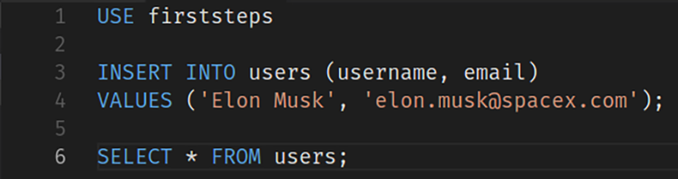
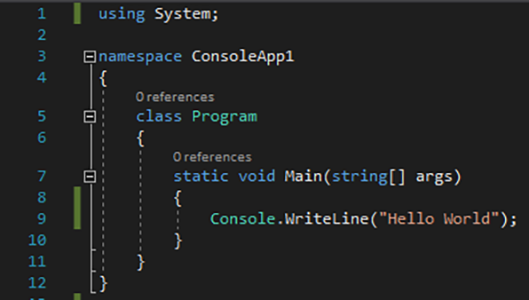
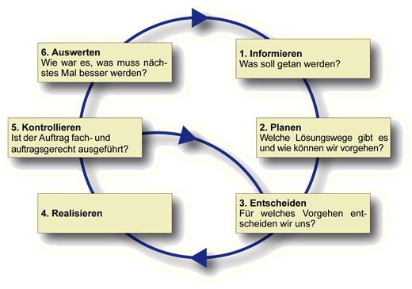
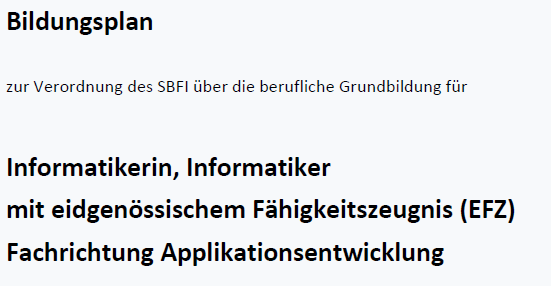
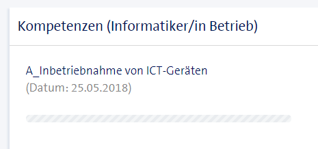
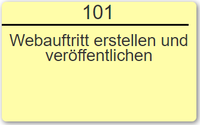
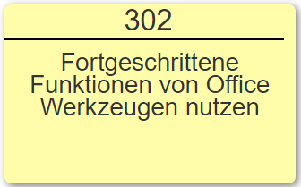
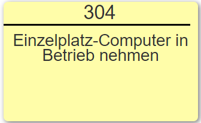
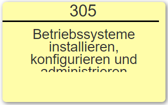

I'd tell you a joke about UDP, but you probably wouldn't get it.
Betriebsinformatiker
Macht alles
Schulmodule
Modul 100
Daten charakterisieren, aufbereiten und auswerten

Modul 403
Programmabläufe prozedural implementieren

Modul 117
Informatik- und Netzinfrastruktur für ein kleines Unternehmen realisieren
Modul 431
Aufträge im IT-Umfeld selbstständig durchführen

Ausbildungsplan
Bildungsplan Applikationsentwicklung
Definiert auf 36 Seiten

Kompetenzen bei Swisscom

Überbetriebliche Kurse
Ablauf




Way Up
Yvonne Brix
Erfahrungsberichte
Erwartungen QPA
Berufsmeisterschaften
Someone's opinion of you does not have to become your reality
Les Brown
Why we love what we are doing
One of the most fulfilling things about programming is that you can turn your dreams into reality. The amount
of skill you need will vary, but generally if you want to develop a certain type of application or service,
you can give it a try.